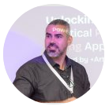

Department of Engineering and Architecture, University of Trieste
Advanced research in machine learning

Associate Professor
Artificial Intelligence, Process Mining, Data Science, Explainable AI, AutoML
Email: sylvio.barbonjunior@units.it
Phone: +39 040 558 3146
Office: Building C3, Room C3_2.14, Floor 2
GitHub: github.com/sbarbonjr
LinkedIn: linkedin.com/in/barbon
Associate Professor
Evolutionary Computation, Machine Learning in Engineering, Computer Security, NLP
PhD Candidate
PhD 2024-2026, University of Trieste
Framework converting tree ensemble models into interpretable graph structures for transparency. Focus on explainable AI and model interpretability.
Research Area: Explainable AI, Model Interpretability
Keywords: Decision Trees, Transparency, XAI
Optimization framework for unsupervised learning. Automated clustering pipeline generation with focus on practical applicability.
Research Area: AutoML, Clustering Optimization
Keywords: Unsupervised Learning, Pipeline Optimization
Extended TPOT AutoML tool enabling automated clustering pipeline generation. Bridges theory with practical implementation.
Research Area: AutoML, Data Science
Keywords: Pipeline Optimization, Clustering
Marie Skłodowska-Curie Staff Exchanges project across five countries focusing on "efficient decision algorithms for complex dynamical systems".
Lead: Prof. Barbon
Scope: International collaboration, 5 countries
AI and deep learning applications to process mining and business process optimization. Focus on real-world business impact.
Lead: Prof. Barbon
Keywords: Process Mining, Deep Learning, Business Optimization
Digital twin technology for port-to-rail intermodal transport in the Adriatic region. Application of ML to industrial logistics.
Lead: Prof. Barbon
Application: Digital Twins, Logistics, Intermodal Transport
Access Prof. Barbon's complete publication record on Google Scholar:
View Google Scholar ProfileResearch Areas: Explainable AI, AutoML, Process Mining, Data Science, Machine Learning
Access Prof. De Lorenzo's complete publication record on Google Scholar:
View Google Scholar ProfileResearch Areas: Evolutionary Computation, Machine Learning in Engineering, NLP, Genetic Programming
The Machine Learning Laboratory provides dedicated workspace for research activities:
Location: Department of Engineering and Architecture, University of Trieste
For more information about available computing resources and laboratory facilities, please contact the group leaders.
Department of Engineering and Architecture
University of Trieste
Trieste, Italy
Email: sylvio.barbonjunior@units.it
GitHub: github.com/sbarbonjr
Email: andrea.delorenzo@units.it
Phone: +39 040 558 3419
Office: Building C3, Room C3_2.54